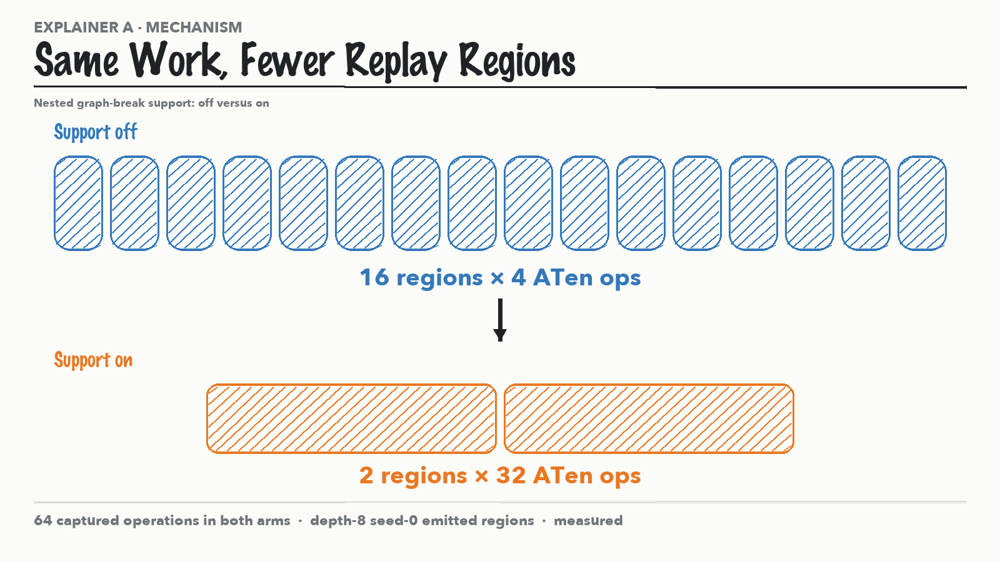
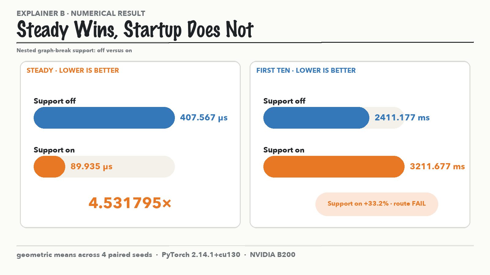
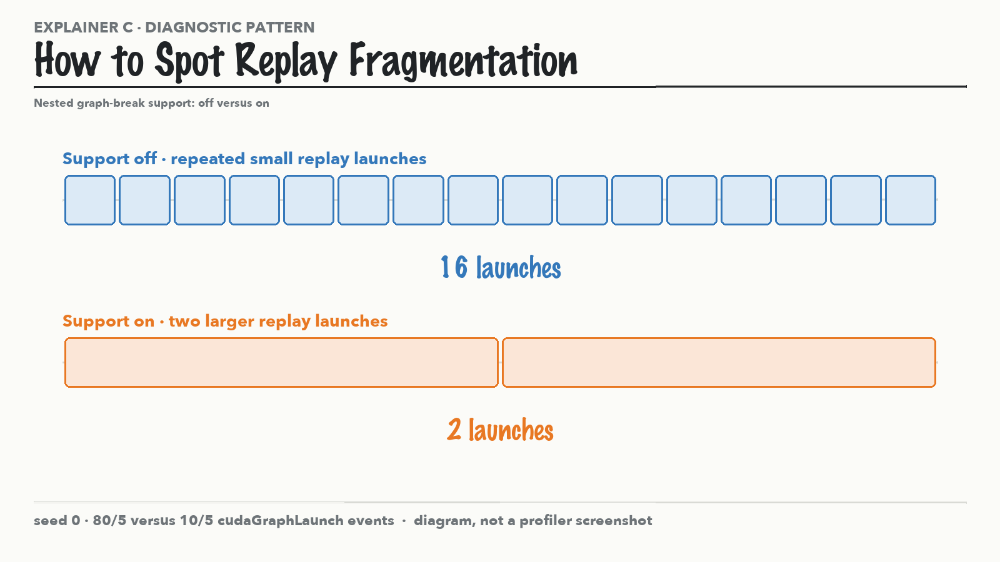
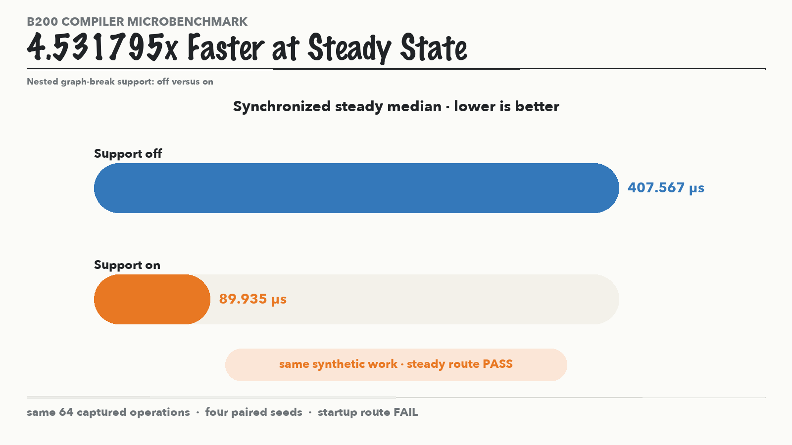
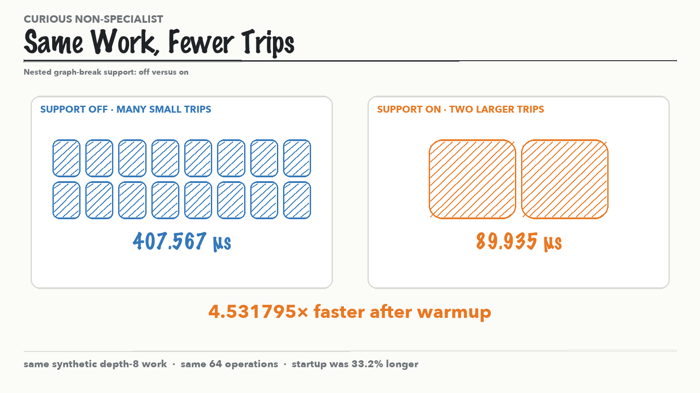
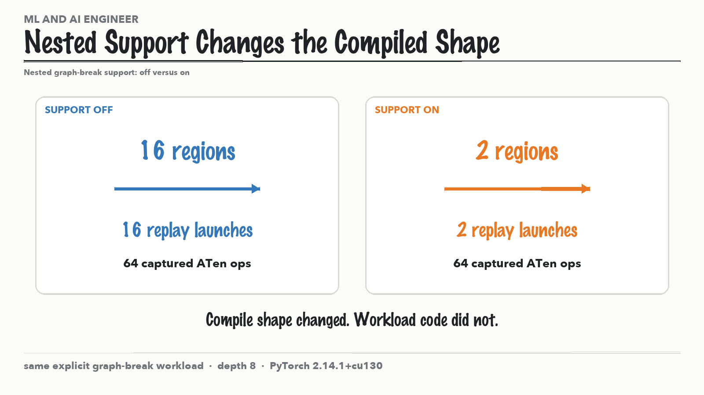
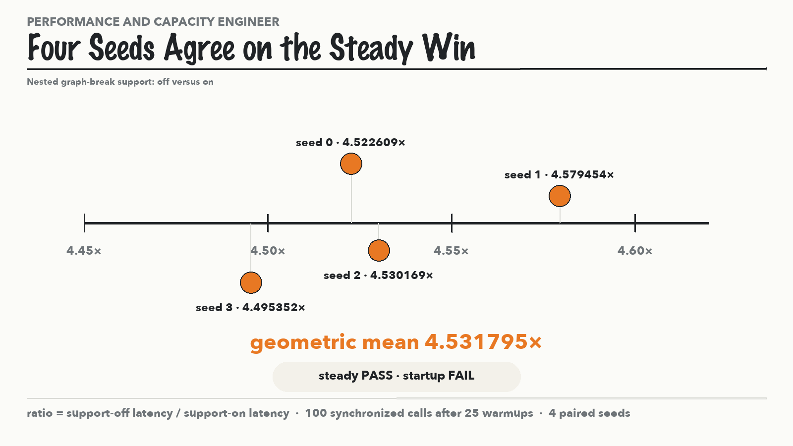
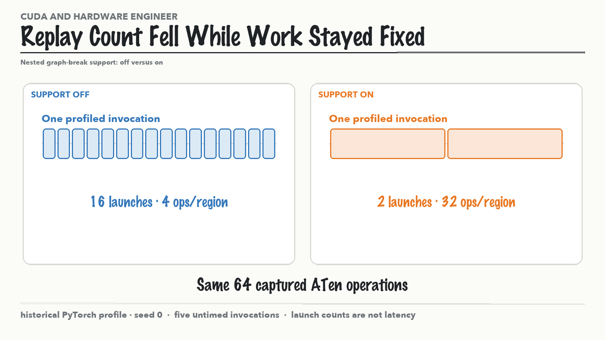
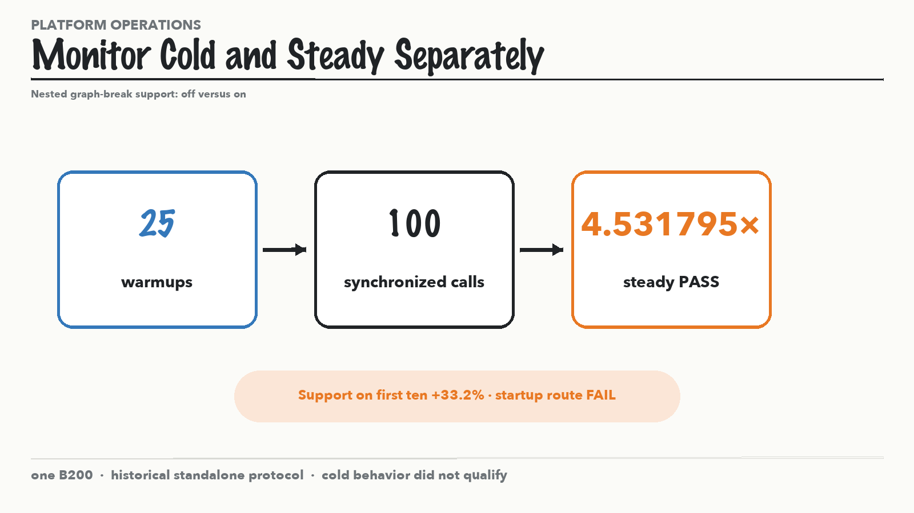
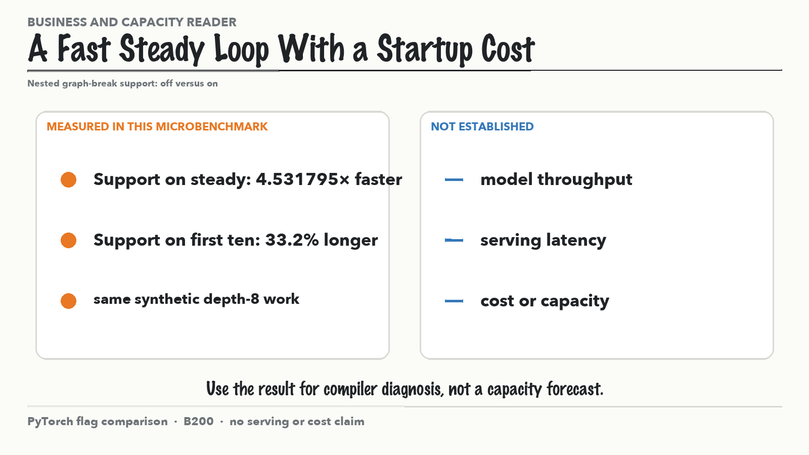

a · Same Work, Fewer Replay Regions

The flag changes emitted regions from 16 x 4 operations to 2 x 32 operations while preserving 64 captured operations.
All claim-bearing labels come from retained public evidence. Fresh run 022 stays separate.

The flag changes emitted regions from 16 x 4 operations to 2 x 32 operations while preserving 64 captured operations.

The historical cohort measured a 4.531795x synchronized steady speedup and a 33.2 percent longer first-ten interval total.

The retained historical profile recorded 16 versus 2 cudaGraphLaunch events per profiled invocation.

The historical depth-8 B200 cohort measured 407.567 microseconds with support off and 89.935 microseconds with support on, a 4.531795x steady speedup over the same synthetic work.

After warmup, grouping the same synthetic work into fewer replays reduced synchronized latency from 407.567 to 89.935 microseconds.

The same workload under fullgraph false emitted 16 versus 2 regions and replay launches when nested graph-break support changed.

All four paired seeds measured a steady speedup between 4.495352x and 4.579454x with a 4.531795x geometric mean.

The historical seed-0 profile recorded 16 versus 2 graph launches per invocation while compiler counters retained 64 captured ATen operations.

The steady route passed after 25 warmups and 100 synchronized calls while the first-ten startup route failed.

The microbenchmark measured a 4.531795x steady speedup and a 33.2 percent first-ten penalty but did not measure serving, cost, or capacity.